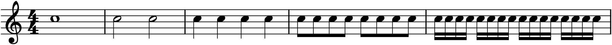
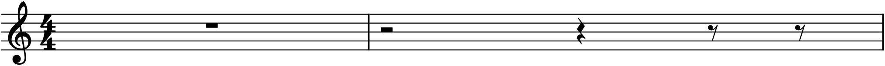
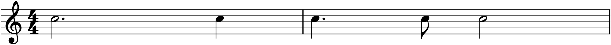
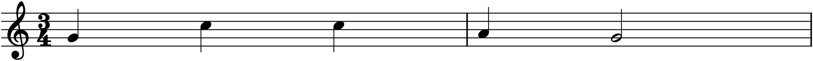
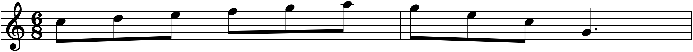

Chapter 5 was about the vertical axis of the graph — how high a note sounds. This chapter is about the horizontal one: when it sounds, and for how long. Pitch tells you what note; rhythm tells you when to play it and when to let go. A melody is the two axes at once, and of the pair, rhythm is the one an audience feels first. You can hum “Happy Birthday” on a single pitch and it is still recognizable; flatten its rhythm and it vanishes.
6.1The beat
Underneath almost all music runs a steady pulse — the beat, the thing you tap your foot to. It is not usually written down as such; it is the invisible grid that everything else is measured against. How fast that pulse goes is the tempo, given either as a mood-word (Allegro, Adagio) or, precisely, in beats per minute: ♩ = 120 means a hundred and twenty beats a minute, two every second.
Rhythm is what happens against the beat. Some notes last exactly one beat, some fill several, some subdivide a beat into two or four. Notation’s job is to show, for each note, how many beats it holds. It does this not with numbers but with the shape of the note.
6.2Note values
Durations in Western notation are relative and organized by halving. A whole note is the reference. Cut it in half and you get a half note; halve that and you get a quarter note; then an eighth, a sixteenth, and on down, each worth half of the one before. The names are the arithmetic: a quarter note is one-quarter of a whole note.
The shapes encode the value in three features — whether the notehead is hollow or filled, whether it has a stem, and whether that stem carries flags:

Read Figure 6.1 as a set of scales balancing: a whole note weighs the same as two halves, or four quarters, or eight eighths. This is the one fact that makes rhythm arithmetic instead of guesswork. A hollow notehead with no stem is a whole note; hollow with a stem, a half; filled with a stem, a quarter; and each flag (or beam) on the stem halves the value again — one flag for an eighth, two for a sixteenth.
6.3Rests
Silence is part of rhythm, and it is notated as deliberately as sound. Every note value has a matching rest of the same duration — a measured quiet. Rests are not gaps where nothing was written; they are instructions to not play for a precise length, and leaving them out is as wrong as leaving out a note.

The two most confusable are the half rest and the whole rest: both are small rectangles near the middle line, but the whole rest hangs down from the fourth line, while the half rest sits up on top of the third. A rough mnemonic: the heavier, longer whole rest is too heavy to sit on the line and hangs below it.
6.4Dots and ties
Two devices extend a note beyond the tidy powers of two.
A dot placed after a notehead lengthens it by half its own value. A dotted half note is thus a half plus a quarter — three beats in all — and a dotted quarter is a quarter plus an eighth. The dot is how notation writes the durations that fall between the halving steps, and it turns up constantly.

A tie — a small curved line joining two noteheads of the same pitch — welds their durations into one continuous sound. Ties do two jobs: they write durations no single symbol can (a note held for five beats, say), and they carry a note across a barline, which no single notehead is allowed to do. A tie is not the same as a slur, which looks similar but connects different pitches and means something else entirely; we will meet slurs in Chapter 10.
6.5Meter and the time signature
Beats are not felt as an undifferentiated stream. We group them — most naturally into twos and threes — and hear the first beat of each group as slightly stronger. That grouping is meter, and it is why a march (groups of two) feels different from a waltz (groups of three) even at the same tempo. On the page, the groups are marked off by vertical barlines into measures (or bars).
The time signature, two stacked numbers at the start of a piece, defines the grouping. The top number is how many beats are in each measure; the bottom number says which note value gets one beat. In the most common meter of all, 4/4, four (top) quarter notes (bottom, the “4” meaning a quarter) fill a bar — so common it is often just marked C. You have already been reading it: every bar in Figure 6.1 is 4/4.
6.6Simple and compound meter
Change the top number and you change the feel. 3/4 puts three quarter-note beats in a bar — the meter of every waltz, with its strong-weak-weak lilt:

Meters like 2/4, 3/4, and 4/4, where each beat divides naturally into two, are called simple. When instead the beat divides into three, we have compound meter, and it is written with a different kind of time signature. In 6/8, the bar holds six eighth notes — but they are not felt as six little beats. They group into two larger beats, each a dotted quarter’s worth, each subdividing into three eighths. That gentle triple-inside-duple sway is the sound of a lullaby, a barcarolle, a jig.

The distinction between simple and compound is not pedantry: it tells a performer how to feel the bar, where the weight falls, how the subdivisions lean. Two pieces can share the same notes and the same tempo and sound like different genres purely because one is barred in 3/4 and the other in 6/8.
In MuseScore
Rhythm in MuseScore is entered by choosing a duration before you type a pitch. In note input mode (N), the number-row keys set the current duration:
| Key | Duration |
|---|---|
| 1 | sixteenth note |
| 2 | eighth note |
| 3 | quarter note |
| 4 | half note |
| 5 | whole note |
| . | dots the current duration |
So to enter a dotted half note, press 4 then ., then type a letter. To enter a rest of the current duration, press 0 instead of a pitch. To tie the note you just entered to a new one of the same pitch, press T.
Set the meter from the Time Signatures palette: double-click 3/4 or 6/8 onto the score, and MuseScore re-bars everything for you and beams the notes according to the meter — watch the eighth notes in 6/8 snap into groups of three. Change the tempo from the Tempo palette, or just type a metronome mark. Press Space to hear it, and toggle the metronome (the click) from the playback toolbar so you can hear your rhythm against the beat it is written against.
Try it: in 4/4, enter one bar as quarter–quarter–half, a second bar as dotted-quarter–eighth–half, and play them back. Then change the time signature to 3/4 and watch MuseScore redraw the barlines — the same notes, regrouped, suddenly leaning differently.